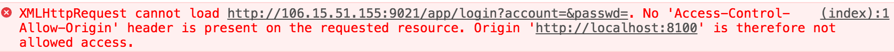

在ionic中不管是登录还是请求列表信息，都会需要使用http请求。
想要使用Http请求，就需要先App.module.ts 中注册HttpModule
1 2 3 4 5 6 7 8 9 10 11 import { HttpModule} from '@angular/http' ;@NgModule ({ imports: [ HttpModule ], declarations: [ MyApp ], bootstrap: [ IonicApp ] }) export class AppModule {}
注册好之后，就可以使用了，先把home.html页面表单写好
1 2 3 4 5 6 7 8 9 10 11 12 13 14 15 16 17 18 19 20 21 22 23 24 <ion-header > <ion-navbar > <ion-title > Home</ion-title > </ion-navbar > </ion-header > <ion-content padding > <h2 > Welcome to Ionic!</h2 > <ion-list > <ion-item > <ion-label fixed > 用户名：</ion-label > <ion-input type ="text" [(ngModel )]="User.username" > </ion-input > </ion-item > <ion-item > <ion-label fixed > 密码：</ion-label > <ion-input type ="password" [(ngModel )]="User.passwd" > </ion-input > </ion-item > <ion-item > <button ion-button color ="red" (click )="submit($event)" > 提交</button > </ion-item > </ion-list > </ion-content >
四种数据绑定的形式 1 2 3 4 5 6 7 8 9 10 11 <li > {{hero.name}}</li > <hero-detail [hero ]="selectedHero" > </hero-detail > <li (click )="selectHero(hero)" > </li > <input [(ngModel )]="hero.name" >
1 2 3 4 5 6 7 8 9 10 11 12 13 14 15 16 17 18 19 20 21 22 23 24 25 26 27 28 29 import { Component } from '@angular/core' ;import { NavController } from 'ionic-angular' ;import { Http,Response,Jsonp } from '@angular/http' ;@Component ({ selector: 'page-home' , templateUrl: 'home.html' , }) export class HomePage { User = { username: '' , passwd: '' , } constructor (public navCtrl: NavController,private http: Http,public jsonp: Jsonp } submit(event){ this .http.request('http://localhost:9090/app/login?account=' +this .User.username+'&passwd=' +this .User.passwd) .subscribe((res: Response ) => { this .listData = res.json(); }); } }
this.http.request()
this.http.get()
this.http.post()
但这样会造成如下跨域的问题 
可以先用Jsonp来解决，
同样需要先在App.module.ts中注册JsonpModule的模块
1 2 3 4 5 6 7 8 9 10 11 12 13 14 15 16 import { HttpModule,JsonpModule} from '@angular/http'; import { HomePage } from '../pages/home/home'; @NgModule({ declarations: [ MyApp, HomePage, ], imports: [ BrowserModule, HttpModule, JsonpModule, IonicModule.forRoot(MyApp) ], bootstrap: [IonicApp], })
修改home.ts中的代码
1 2 3 4 5 6 7 8 9 10 11 12 13 14 15 16 17 18 19 20 21 22 23 24 25 26 27 28 29 30 31 32 33 import { Component } from '@angular/core' ;import { NavController } from 'ionic-angular' ;import { Http,Jsonp } from '@angular/http' ;@Component ({ selector: 'page-home' , templateUrl: 'home.html' , }) export class HomePage { User = { username: '' , passwd: '' , } constructor (public navCtrl: NavController,private http: Http,public jsonp: Jsonp } submit(event){ this .jsonp.request('http://localhost:9090/app/login?account=' +this .User.username+'&passwd=' +this .User.passwd+'&jsonp=callback&callback=JSONP_CALLBACK' , { method: 'Get' }) .subscribe( (data) => { console .log(data); console .log(data.json()); }, (error) => { console .log(error); } ); } }
Promise写法
如果想在网络错误的情况下也提供解决的方式
1 2 3 4 5 6 7 8 9 10 11 var headers = new Headers(); headers.append("Accept" , 'application/json' ); headers.append('Content-Type' , 'application/x-www-form-urlencoded' ); let options = new RequestOptions({ headers : headers });this .http.post('http://localhost:9090/app/login?' + 'account=' +this .User.username + '&passwd=' +this .User.passwd,) .toPromise() .then(res =>this .listData = res.json(); }) .catch(err =>console .error(err) });
this.http.post(URL,postParams,headerOptions) 接收三个参数，也可以只传两个参数 (URL,headerOptions)，想要传输的参数就拼在url里。如果想通过 postParams传参，则需要这么写
1 2 3 4 let postParams = { phone: 18362132311 , password: 123456 , }
但是这样的参数是会出现在 RequestPayload 里的，python 后台无法通过 request.form['phone'] 来获取参数，因此只能通过参数跟在 url 里的形式，如
1 2 3 let URL = 'http://localhost:5000/app/login?' + 'phone='+this.User.phone + '&password='+this.User.password
有个疑问，明明这里指定了 Content-Type 为 application/x-www-form-urlencoded 但是实际请求的时候却是无效的，显示的依旧是 text/html; charset=utf-8。